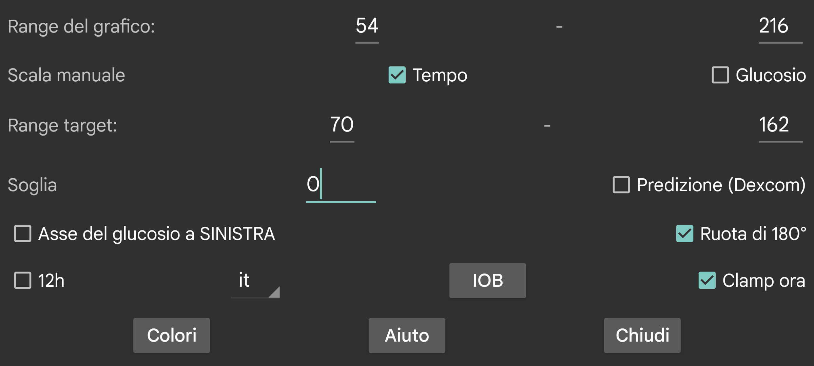

ar de es hi it ja ko nl ru tr uk uz en
Cambia i colori delle curve, delle scansioni e dei numeri. Per attivare la Modalità scura, usa menu centrale destro->Modalità scura.
Fornisci un valore basso e uno alto, in modo che il fondo dello schermo corrisponda al più basso e la parte superiore al più alto. Questi valori sono usati solo quando tutti i valori del glucosio mostrati sullo schermo sono entro questi limiti. Altrimenti, i limiti vengono allargati in modo che tutti i valori siano visibili. Quando prendi 3 mmol/L (54 mg/dL) e 9 mmol/L (162 mg/dL), e tutti i valori sul display visibile sono tra 5 mmol/L e 6 mmol/L, il grafico mostra un asse del glucosio da 3 a 9.
Se Scala manualmente il glucosio è attivato, puoi cambiare questo: muovendo il dito sulla parte superiore dello schermo, sposti la metà superiore del grafico verso l'alto e verso il basso; muovendoti sulla parte inferiore dello schermo sposti la metà inferiore del grafico verso l'alto e verso il basso.
Il lato superiore del display è colorato diversamente in modo da poter vedere più facilmente i valori alti. Lo stesso vale per i valori bassi. Una linea rossa viene mostrata per indicare il lato troppo basso del display.
Mostra i numeri dell'asse del glucosio sulla sinistra dello schermo invece che al centro.
Applica una soglia alla velocità di variazione dei valori del glucosio. La freccia della velocità di variazione devia dall'orizzontale solo se la velocità di variazione differisce da 0 di almeno questa quantità. Puoi usare valori arbitrari tra 0 e 0,8. La soglia previene di sovrainterpretare piccole velocità di variazione. È del tutto possibile che la freccia mostri un glucosio che cresce lentamente quando il trend sottostante è in realtà in diminuzione. La soglia è usata per fare un'affermazione più cauta.
I sensori Dexcom inviano con ogni valore reale anche un valore previsto. Ho cercato su google, ma non ho trovato alcun riferimento a questo. Ho solo trovato che Dexcom supportava un allarme che prediceva i valori bassi fino a 20 minuti in anticipo, vedi https://www.dexcom.com/g7/how-it-works#alerts
Quando ho posizionato questi valori 20 minuti nel futuro, non si adattavano molto bene. Andavano molto meglio quando li ho posizionati 10 minuti nel futuro.
Quando attivi questa opzione, questi valori predetti vengono mostrati nello stesso modo in cui i valori della cronologia dei sensori Libre vengono mostrati in Juggluco. Puoi anche disattivarli deselezionando menu centrale destro→Cronologia. In Juggluco non sono usati per gli allarmi, puoi semplicemente visualizzarli per giudicare quanto bene predicono.
Capovolgi il display. È attivato di default, perché altrimenti mi capitava di toccare accidentalmente OK mentre scansionavo un sensore.
Alcune persone chiedono la modalità verticale, ma l'ho disattivata, perché è totalmente inappropriata per la visualizzazione del grafico del glucosio.
L'IOB è una misura di quanta insulina rimane dalle dosi di insulina precedenti. Per fare questo, devi inserire le dosi di insulina sotto un'etichetta nella categoria "Insulina ad azione rapida". Puoi specificare quali etichette sono "Insulina ad azione rapida" in Menu sinistro→Impostazione→Scambio dati→Webserver→Fornisci valori.
Quando "Now clamp" è impostato, il periodo di tempo mostrato sullo schermo viene fatto scorrere a sinistra in modo che il presente sia sempre nello stesso punto dello schermo. Alcuni utenti eseguono Juggluco su un emulatore Android su un computer a qualche metro di distanza. Quando "Now clamp" è disattivato, la posizione del valore corrente del glucosio si sposterebbe verso destra con il passare del tempo, così che dopo poche ore non sia più visibile. Questo rende necessario camminare fino al computer e scorrere lo schermo di qualche centimetro. Quando "Now clamp" è attivato, questa distrazione non è più necessaria.
Juggluco viene mostrato nella lingua scelta. Quando non viene selezionato alcun codice di lingua, viene usata la lingua di sistema.